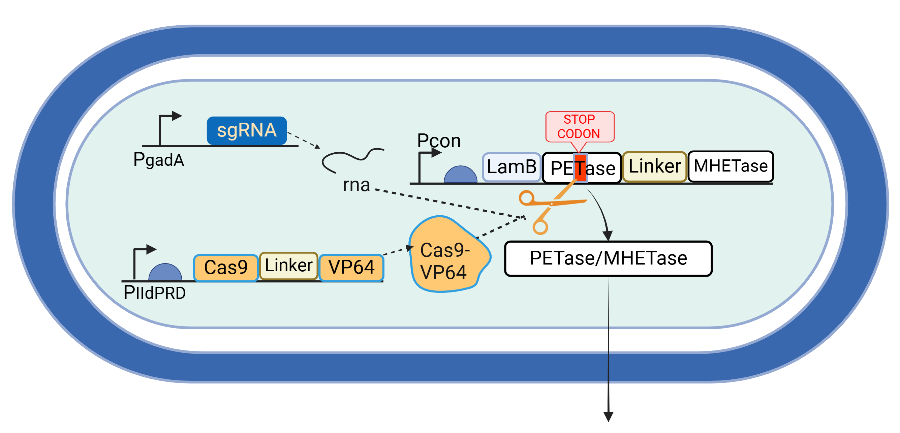
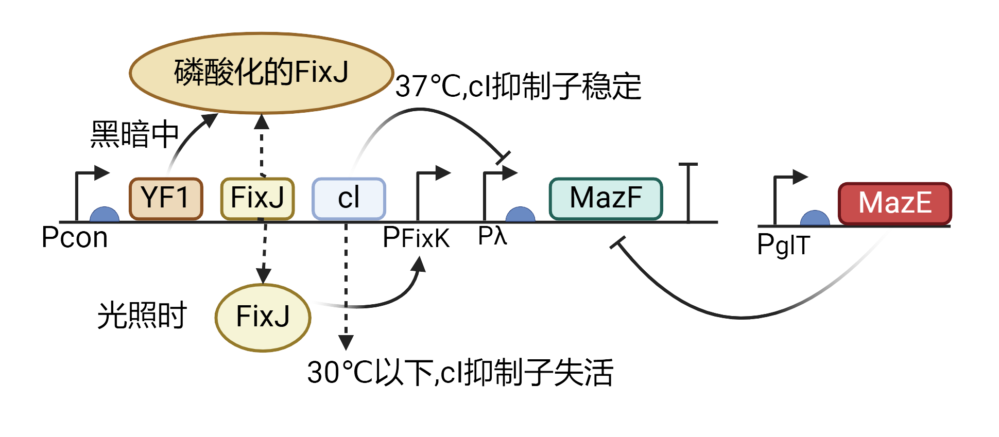

我们做这个项目是为了解决什么问题？
从根源上解决微塑料侵害人体的问题，即阻止微塑料被肠道吸收进入人体。并且补充被微塑料破坏的肠道菌群。
为什么要做这个项目？
我们每个人每天都在摄入微塑料，且微塑料正在危害我们的身体。
如今，塑料已无处不在，甚至我们的饮食也离不开它。从食品包装袋到瓶装水，食物和水在进入人体之前几乎都会接触到PET塑料包装，这使得微塑料（直径小于5毫米）不可避免地进入我们的体内。
研究表明，长期接触微塑料会对人体内健康产生不良影响。其甚至能突破血脑屏障(1)，引起脑内疾病，还可以通过血液循环影响全身各个部位。微塑料不仅存在于血管和大脑中，还被发现于肝脏、肾脏、胎盘和母乳(1)，引起癌症、呼吸系统疾病、炎症性肠病破坏肠道菌群等(2)
为什么要把产品设计成冻干粉？
我们的研究聚焦于乳酸菌，而提到乳酸菌产品，人们往往首先想到酸奶等制品。然而，我们选择不开发这些传统产品。通过问卷调查，我们发现许多人存在乳糖不耐受问题。进一步查阅文献后，我们发现中国人乳糖不耐受的比例高达75%。
我们希望开发一种适用于几乎所有人群的产品。所以不将产品局限于某一特定食物。
此外，冻干粉具有体积小、便于保存、携带和运输的优点，这也是我们选择这一形式的原因。
为什么选择植物乳植杆菌DT88？
我们查阅文献发现，乳酸菌中的植物乳杆菌DT88具有类似活性炭的功能，能够有效吸附微塑料(4)。如果我们赋予其降解微塑料的能力，并让它在肠道内定植，就能有效改善肠道环境。
并且植物乳酸杆菌是少有的能在小肠内定植的益生菌，可以在小肠吸收微塑料之前将其降解。
能定位在肠道中并在有/无进食时自动调节强度的微塑料降解模块
工程菌通过pH敏感启动子pgadA在小肠（pH值6.8左右）时启动，生成sgRNA。乳酸敏感启动子plldPRD响应乳酸刺激，在进食时生成Cas9。工程菌进入人体后，Cas9与sgRNA结合，切除PETase基因终止密码子，启动PETase/MHETase合成，并通过LamB信号肽通过SEC途径分泌到细胞外。
在肠道定植后，PETase终止密码子已被切除，工程菌可在无进食时微量表达微塑料降解酶，降解日常水中微塑料；进食时，Cas9-VP64相当于dCas9-VP64作用，促进PETase大量表达，增强食物中微塑料的降解能力。
基于与门的安全模块
YF1是一种光敏激酶，能在黑暗中保持磷酸化状态，而在蓝光照射下去磷酸化。而FixJ是响应调节因子。
通过将光感应系统（YF1-FixJ）与温度感应系统（Cl）结合，构建了一个OR逻辑门。该系统使乳酸菌在光照时间过长或温度低于30℃时启动MazF自杀系统，从而实现在体外的可控灭活。
将工程菌与低聚糖（一种膳食纤维）放在一起。在摄入人体之前，由于识别pQIT启动子：这类启动子对低浓度光敏感，合成MazE抑制MazF的作用。而低聚糖这类益生元还可以帮助乳酸菌定植。
我们的灵感以及创新点
阅读公众号新闻和最新文献发现，微塑料对人体的危害是最新发现的问题（可以看到我们查阅的文献都是2024年、2025年的），且通过查询pubmed文献与IGEM官网，发现没有人做去除人体微塑料或者阻止微塑料进入人体的项目。只有去除环境中的微塑料（例如海洋垃圾）。
我们的项目目标
参考文献
-
1Nihart, A.J., Garcia, M.A., El Hayek, E. et al. Bioaccumulation of microplastics in decedent human brains. Nat Med (2025).
-
2Ewa Winiarska, Marek Jutel, Magdalena Zemelka-Wiacek,The potential impact of nano- and microplastics on human health: Understanding human health risks.,Environmental Research,Volume 251, Part 2,2024,118535,ISSN 0013-9351。
-
3侯安存. 乳糖不耐受的诊治进展[J]. 临床和实验医学杂志，2017，16(02): 204-206.
-
4Teng X, Zhang T, Rao C. Novel probiotics adsorbing and excreting microplastics in vivo show potential gut health benefits. Front Microbiol. 2025 Jan 10;15:1522794. doi: 10.3389/fmicb.2024.1522794. PMID: 39867494; PMCID: PMC11757873.